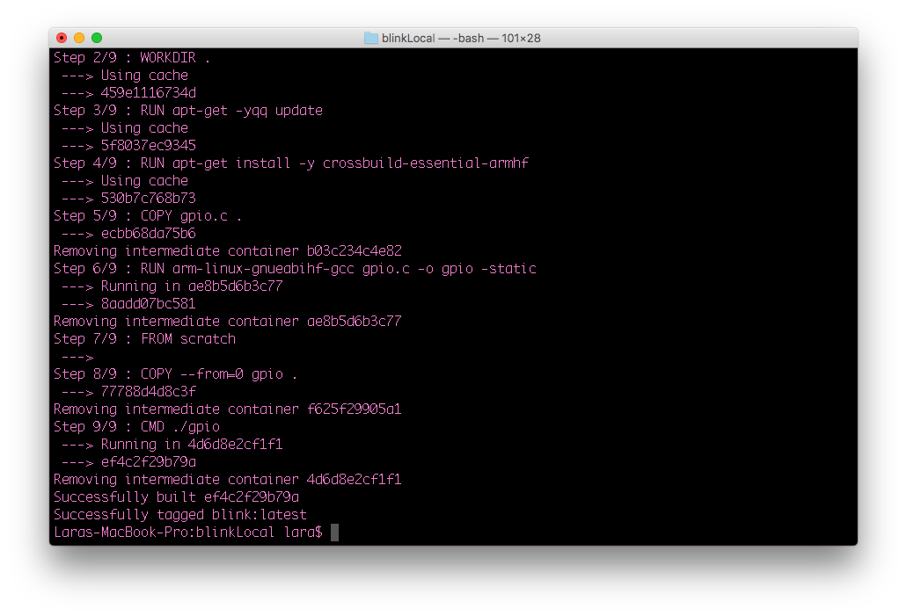

Welcome to Gadget!
Gadget is a suite of tools for developing, deploying, and distributing your applications to C.H.I.P. Pro and Gadget supported devices.
This documentation starts by guiding you through the installation of Gadget then a quickstart “hello world” example to make sure everything is set up correctly. It then moves into more detailed instructions on how to build, share and deploy custom and community built applications. After going through the quickstart and how to build with Gadget sections, this documentation also offers helpful references and several example projects to start building with.
What is Gadget?
Gadget is made up of two pieces of software that work together to simplify embedded software development.
1) GadgetCLI is a command-line tool you use on your development machine. It lets you manage your code, add and build containers, and deploy your finished projects to Gadget supported hardware.
Supported Systems:
- Linux 64-bit (kernel 3.10+)
- OSX
- Windows 10 Pro 64-bit
2) GadgetOS is a Buildroot-based Linux operating system. It boots quickly, takes up a small amount of NAND, and is designed to work with GadgetCLI.
Buildroot is at the core of GadgetOS and features Docker support. The GadgetCLI communicates directly with the Docker daemon over ssh, using GadgetOS’s USB ethernet connection.
C.H.I.P. Pro
- Boot time is ~5 seconds to shell on the UART. Depending on user optimization, containers can load in ~5 - 15 seconds.
- NAND availability for containers, files, assets, etc. is 350MB.
Set Up Gadget
To get started, download and install the following on your development machine and Gadget compatible device.
Install Docker
Note: Gadget requires Docker version 17.06 or greater. If Docker is already installed check which version of Docker you have with the command docker -v.
Gadget makes use of Docker’s container system. Dependent on your development machine’s OS, download and install the appropriate version of Docker.
After you install Docker, you will need to run it once before using GadgetCLI. GadgetCLI uses the Docker daemon to pull images from Docker Hub or to build directly from local Dockerfiles. Learn more about Docker Hub and how to use it here.
Additional Setup for Linux
Build and Run ARM Docker Images
If your development machine runs Linux you may need to download extra packages and add missing files to the system for Docker to successfully build an arm32v7/* Docker image. Open a terminal window and install binfmt-support and qemu-user-static and then reboot.
sudo apt-get update
sudo apt-get install binfmt-support qemu-user-static
sudo reboot
In addition to installing these packages, your Linux distro may still be missing qemu-user-static files . Follow the instructions outlined here to check whether they are missing and how to obtain them.
Check the Troubleshooting section for specific errors you may be getting.
Run Docker as Unprivileged User
In some instances, such as building NTC’s Gadget-OS kernel, You need to run Docker as an unprivileged user. To set this up, follow Docker’s Linux Post-install instructions.
Install Gadget
Download the zip file containing the latest release of GadgetCLI and GadgetOS here. Put the gadget binary in your system’s PATH or precede all the commands with ./ e.g., ./gadget while in the same directory.
PATH location:
MacOS
On a Mac, place the Gadget binary in this location:
/usr/local/bin
To view the current value of your PATH environment variable:
echo $PATH
To add a new path, open the /etc/paths file:
nano /etc/paths
Add the new path to the end of the file and save.
Windows 10
Put the gadget binary somewhere like C:\Program Files\gadget and edit the Path variable to point to that location.
Click the Windows icon to open the Start Menu. Search for Advanced System Settings. When the System Properties window opens click on Environment Variables.
Find and select the Path variable under System Variables. Click Edit and the Edit Environment Variable window will open. Click New and enter the directory path to the Gadget binary. Then click OK.
Linux
Put the Gadget binary here:
/usr/bin
To view the current value of your PATH environment variable:
echo $PATH
To add a new path to the current value after the default system paths of PATH use this command:
PATH=$PATH:/my/new/path
Flash GadgetOS
Use the web flasher to install GadgetOS on your C.H.I.P. Pro Dev Kit. The latest GadgetOS is required for GadgetCLI to be able to talk to your hardware device and found in the GitHub repo.
Once flashed, power cycle C.H.I.P. Pro Dev Kit by either unplugging it from the USB port or pressing the On/Off button.
Hello World
Get up and running in minutes with this straight forward Hello World example.
1. Create Project a Directory
mkdir hello-world
cd hello-world
2. Initialize Project
gadget init
This command creates a template file called gadget.yml and generates a project called “hello-world” ready to be deployed.
Open gadget.yml using Nano or your favorite command-line text editor. The .yml file should look similar to what’s below.
spec: "0.0"
name: directoryName
uuid: 1789cc27-e1a8-40ef-aa1f-324092e6eff7
type: docker
onboot:
- name: hello-world
uuid: 1ef762fe-a500-41d1-8cf9-bbd621dd09b8
image: arm32v7/hello-world
directory: ""
net: ""
readonly: false
command: []
binds: []
capabilities: []
devices: []
services: []
3. Build
gadget build
4. Deploy
gadget deploy
5. Start
gadget start
6. Look at Logs and Check Status
Once the container runs, it outputs a “hello world” message to the log file. You can view these message by using the gadget logs command.
gadget logs
You should see a message with an intro similar to this:
Hello from Docker!
This message shows that your installation appears to be working correctly.
...
Congrats, you have built and deployed your first Gadget project!
7. Stop and Cleanup Container
To stop the running container use the gadget stop command.
gadget stop
To delete the container use the gadget delete command.
gadge delete
Set Up WiFi
GadgetOS comes with a quick and convenient way to connect to your device through the host computer’s USB port, which is handy for things like setting up WiFi. To connect your computer to GadgetOS type the following command.
gadget shell
Enable WiFi and Find a Network
Use connmanctl to enable WiFi, scan for available networks, and list all the networks in range.
connmanctl enable wifi
connmanctl scan wifi
connmanctl services
The services command will give output similar to:
WaffleHouse wifi_xxxxxxxxxxxx_xxxxxx_managed_psk
wifi_xxxxxxxxxxxx_hidden_managed_psk
YOUR_NETWORK wifi_xxxxxxxxxxxx_xxxxxx_managed_psk
wifi_xxxxxxxxxxxx_xxxxxx_managed_none
Donut_Hut wifi_xxxxxxxxxxxx_xxxxxxxxx_managed_psk
Connect
Copy the string to the right of the network name you want to connect to that starts with “wifi_.” If the string contains a psk at the end, it means the network is password protected. Follow the “Password Protected” section further down to connect.
No Password
To connect to YOUR_NETWORK, which has no password, services shows two choices. You want the one without psk in the string. Use the connect command:
connmanctl connect wifi_xxxxxxxxxxxx_xxxxxx_managed_none
If your network is not password protected, you’ll get some output that will indicate a successful connection, such as:
[ 961.780000] RTL871X: rtw_set_802_11_connect(wlan0) fw_state=0x00000008
[ 962.070000] RTL871X: start auth
[ 962.080000] RTL871X: auth success, start assoc
[ 962.090000] RTL871X: rtw_cfg80211_indicate_connect(wlan0) BSS not found !!
[ 962.100000] RTL871X: assoc success
[ 962.110000] RTL871X: send eapol packet
[ 962.290000] RTL871X: send eapol packet
[ 962.300000] RTL871X: set pairwise key camid:4, addr:xx:xx:xx:xx:xx:xx, kid:0, type:AES
[ 962.320000] RTL871X: set group key camid:5, addr:xx:xx:xx:xx:xx:xx, kid:1, type:AES
If your network is password protected, you’ll get an error.
Password Protected
To deal with passwords, you’ll need to put ConnMan into interactive mode:
connmanctl
This command gives a connmanctl prompt:
connmanctl>
In the shell, turn the agent on so it can process password requests:
agent on
Now use the connect command with your pasted wifi network string:
connect wifi_xxxxxxxxxxxx_xxxxxx_managed_psk
Enter your password when prompted:
Agent RequestInput wifi_xxxxxxxxxxxx_xxxxxx_managed_psk
Passphrase = [ Type=psk, Requirement=mandatory ]
Passphrase?
You will be notified that you are connected:
Connected wifi_xxxxxxxxxxxx_xxxxxx_managed_psk
Exit connmanctl interactive mode:
quit
Step 3: Test Connection
Test your connection with ping. Google’s DNS server at the IP address 8.8.8.8 is probably the most reliable computer on the internet, so:
ping -c 4 8.8.8.8
The -c 4 option means it will happen only 4 times. Expect ping to output some timing messages:
PING 8.8.8.8 (8.8.8.8): 56 data bytes
64 bytes from 8.8.8.8: seq=0 ttl=60 time=7.631 ms
64 bytes from 8.8.8.8: seq=1 ttl=60 time=7.474 ms
64 bytes from 8.8.8.8: seq=2 ttl=60 time=7.697 ms
64 bytes from 8.8.8.8: seq=3 ttl=60 time=9.004 ms
--- 8.8.8.8 ping statistics ---
4 packets transmitted, 4 packets received, 0% packet loss
round-trip min/avg/max = 7.474/7.951/9.004 ms
If you have issues connecting, read our “Troubleshooting Connection Problems” on the C.H.I.P. Pro Doc page.
Step 4. Exit Gadget Shell
exit
Configuring Gadget.yml
At the heart of GadgetOS is a container system called Docker. While GadgetOS runs containers, GadgetCLI helps you build, run, and manage them. If you’re new to containers, check out this primer. Together, GadgetOS and GadgetCLI make orchestrating container images easy by using one configuration file: gadget.yml.
Gadget.yml is where you define resources available to the container, issue commands to the running container, specify which containers to run in what order, and more. For example, the hello world demo uses a gadget.yml file that pulls a container available on Docker Hub.
There are two sections to define and configure containers in: onboot and services. You can put multiple container configurations in each section and you can use GadgetCLI to specify which container to control: all of them or just one.
To execute commands on all containers on your development machine run the gadget command without any container image name specified.
gadget [options] COMMAND
To execute a command on a particular container specify the container name.
gadget [options] COMMAND imageName
Onboot
Containers in the onboot section, like the hello-world example, are executed before containers in the services section. All containers in the gadget.yml file execute sequentially from top to bottom of the configuration file. When their command process exits, the container will stop.
To add a container to onboot, run the following command.
gadget add onboot projectName
Services
Containers defined under services run after containers listed in onboot. They are automatically restarted by Docker if it exits with a non-zero return code.
To add a service follow the format below.
gadget add service projectName
Configurations
When you add a project to onboot or services from the command-line, a template configuration is inserted into your gadget.yml file. You’ll need to fill in some details depending on how your project needs to be built and what your container needs at runtime. Below are all the possible configurations and what each does.
Name: Name of project
This will reflect the name that you choose for your project.
gadget add service|onboot projectName
If you choose to edit the Name field after generation, the container will need to be built and deployed again.
Format: name: projectName
Uuid: Container ID
You can have several instances of the same image. These instances are identified by their UUID. For example, if you build an image then change the command configuration and build again you can see both instances on your development machine when you run:
docker images
Format: cont-ainer-uu-i-d
Image: Path of Docker Hub image
An entry for image: is generated when you add to onboot or services via the command:
gadget add service|onboot projectName
To pull a base image from Docker Hub change image: to the username and repository you would like to pull. By default, the “latest” tag of the image is used.
Format:
Generated: image: parent_directory/projectname
Docker Image: image: username/repoName:tag
Directory: Path to directory with Dockerfile
Images can be built locally, rather than pulling from an online registry. This is done by removing the value entered in image: and entering a path in the directory: entry. See the file structure below:
my_project/
├── container_a
│ ├── asset_01
│ ├── asset_02
│ └── Dockerfile
└── gadget.yml
In this particular case, the appropriate directory: value would be "container_a" or "./container_a". The path must be relational. The Dockerfile can also exist in the same directory as the gadget.yml file as illustrated below:
my_project/
├── asset_01
├── Dockerfile
└── gadget.yml
Here, the directory: value would be "." or "./" (the Unix value for “here”).
Format: directory: projDir/
Net: Define which network to use or none
By default, all containers have networking enabled and can make outgoing connections. Use the following arguments to choose which network you would like the container to use:
| Network | Description |
|---|---|
| none | No networking in the container. |
| bridge | Connect the container to the bridge via veth interfaces. |
| host | Use the host’s network stack inside the container. |
| container: [name-UUID] | Use the network stack or another container, specified via its name or id |
| NETWORK | Connects the container to a use created network (using docker network create command) |
Format: net: host
Readonly - Mount the container’s root filesystem as read only
Set to false by default.
Command - Run this command at start
Set a command to be executed automatically upon the start of a container. This also overwrites any CMD specified in a project’s Dockerfile.
Format: command: ['python', 'myPyScript.py']
Binds - Mount a directory
Put any directories here that you would like to mount from the device into the container.
Format: binds: ['/fromHostDir:/toContainerDir']
Capabilities - Enable Linux capabilities
This is where specific Linux capabilities that bypass kernel permission checks get enabled. Some are enabled by default; all others are defined here depending on what is needed for the container at runtime.
Format: capabilities: [SYS_RAWIO]
Devices - Grant access to devices
Define a raw device in Linux to pass to a container. These are different from binds because Linux devices have several different modes of access.
Format: devices: [/dev/mem]
General Rules
When listing items in an array, surround each item with single quotes. For example:
binds: ['/sys:/sys']command: ['python', 'myScript.py']By default, Docker containers are not allowed to access any devices and are “unprivileged.” To access a device and get privileges to Linux capabilities they need to defined in
capabilitiesanddevices. GadgetOS does not promote nor enable operators to pass the--privilegedflag to Docker’s run command.
Build With Gadget
To get more familiar with using gadget.yml, go through the following examples which pulls from an image on Docker Hub and builds and deploys an image from your development machine. Each example blinks an LED on C.H.I.P. Pro Dev Kit.
Pull Remote Image
1. Set Up
- Make sure to install all the necessary software outlined in Set Up.
- Connect C.H.I.P. Pro Dev Kit to your development machine via a USB cable.
2. Create project directory
Fire up Terminal and create a space for your project to live in:
mkdir blinkdemo
3. Initialize Project
Enter your project directory and use gadget init to create a gadget.yml template file.
cd blinkdemo
gadget init
GadgetCLI will tell you that it created a new project:
Creating new project:
in /Users/$USER/Documents/blinkdemo
4. Add Service
To build and run a project a container needs to be defined and configured either under services or onboot in the gadget.yml.
By default, gadget.yml is created with the example “hello-world” project along with a set of configurations. In this example, you’ll add another a service called gpio to the configuration file. To do this use the add command, set it as a service, and give it a name, such as “gpio”:
gadget add service gpio
5. Edit gadget.yml
In the project directory, open gadget.yml:
nano gadget.yml
The gadget.yml file now defines two containers: “hello-world” under onboot and “gpio” in services.
Make edits to the following fields under services:
image
image: nextthingco/gadget-blink-c
Specify an image to pull from the Docker Hub repo in this field. This example pulls an image from the “gadget-blink-c” repo under the “nextthingco” username.
Note: If an image does not receive a tag when built and pushed to Docker Hub you do not include it, like for this example. However, if an image is tagged when built and you want to pull it from Docker Hub the tag needs to be included. You can see available tags by clicking on the Tags tab in a Docker Hub repo. Sometimes tags are included in the images description on Docker Hub, but not always.
binds
binds:['/sys:/sys']
The finished file will look like this:
services:
- name: gpio
uuid: Your-Containers-U-U-ID
image: nextthingco/gadget-blink-c
directory: ""
net: ""
pid: ""
readonly: false
command: []
binds: ['/sys:/sys']
capabilities:[]
devices:[]
Save and close gadget.yml
7. Build, Deploy, and Start an Image
To build an image you must be in the same directory as the gadget.yml file. By default the GadgetCLI commands will effect all the containers specified in your gadget.yml file.
To work with one container, as you’ll do in this example, specify it by name when running GadgetCLI commands. For example, to only build the gpio image run the following command:
gadget build gpio
When the image is done building, deploy, and start your container. Here’s how:
gadget deploy gpio
gadget start gpio
If the container builds, deploys, and starts successfully you will see the following output messages and Pin 34, CSID3 will start blinking:
#### build output
Building:
'hello-world'
'gpio'
#### deploy output
Stopping/deleting older 'hello-world' if applicable
Deploying: 'hello-world'
Starting transfer..
Stopping/deleting older 'gpio' if applicable
Deploying: 'gpio'
Starting transfer..
#### start output
Starting:
hello-world_58915d6b-2770-4988-8f16-b681f3fc5fc7
- started
Starting:
gpio_582583nb-2770-7658-8f16-f681h6fc2bk8
- started
If any of these processes fail, GadgetCLI will output an error along with suggestions of what may be the issue. Go to the troubleshooting section for more information.
8. Stop and Delete Containers
gadget stop gpio
gadget delete gpio
Build Image Locally
You will most likely build container images locally as you develop and test your applications. To build an image you need a Dockerfile and supporting files AKA the build’s context. These files can either be written from scratch or cloned from an existing repo to your computer.
Built images are then deployed to hardware for testing and further iterations. You can share an image by pushing it to an online registry making it available to be pulled to other devices.
Follow along and build an example written in C that makes use of an GPIO pin on the C.H.I.P. Pro Dev Kit.
1. Create project directory
mkdir blinkLocal
cd blinkLocal
2. Create Dockerfile
Create a Dockerfile:
nano Dockerfile
Copy and paste the following content into the new Dockerfile.
FROM debian:stretch-slim
WORKDIR .
RUN apt-get -yqq update
RUN apt-get install -y crossbuild-essential-armhf
COPY gpio.c .
RUN arm-linux-gnueabihf-gcc gpio.c -o gpio -static
FROM scratch
COPY --from=0 gpio .
CMD ["./gpio"]
For an explanation of what each line of this Dockerfile does, refer to the README file in the example’s GitHub repo.
Dockerfiles are capable of holding many kinds of instruction. To learn more about what makes a Dockerfile and it’s full capabilities refer to Docker’s documentation.
3. Create Supporting Files
Create a .c file named “gpio”:
nano gpio.c
Copy and paste this program into the newly created file.
4. Build
While still in the project directory build the image. Use the -t flag to give the image a name, such as “blink”.
docker build -t blink .
Docker will output all the build commands and tell you that it has successfully built.

5. Deploy
You are now ready to use GadgetCLI to deploy the image to your hardware.
Step up one directory and create a gadget.yml file:
cd ..
gadget init
6. Add Service
Add a new service:
gadget add service gpio-c
7. Edit Gadget.yml
nano gadget.yml
Make edits to the following fields under services:
image
image: "" #leave emptyThis field is reserved for pulling images from Docker Hub, so for this workflow, it stays empty.
directory
directory:"blinkLocal"
In this field, put the path of the project directory containing the Dockerfile in relation to the gadget.yml file.
binds
binds:['/sys:/sys']
The binds: configuration mounts the /sys directory from the device into the container at /sys.
services:
- name: gpio-c
uuid: Your-Containers-U-U-ID
image: ""
directory: "blinkLocal"
net: ""
pid: ""
readonly: false
command: []
binds: ['/sys:/sys']
capabilities:[]
devices:[]
Save and close gadget.yml
8. Build, Deploy, and Start Container
gadget build gpio-c
gadget deploy gpio-c
gadget start gpio-c
Pin 34, CSID3 will start blinking!
9. Stop and Delete
When ready, stop the container and clean up:
gadget stop gpio-c
gadget delete gpio-c
10. Shell into GadgetOS
With GadgetCLI you have the ability to shell into GadgetOS at any time:
gadget shell
Once inside GadgetOS, use Docker commands to see images, running containers and to check NAND storage availability.
docker images #existing images
docker ps #running containers
df -h #check NAND availability
To remove forgotten docker images from the host device:
docker rmi -f [image ID] #remove images
Exit shell:
exit
Share Image
Gadget makes use of the growing community of official and community supported Docker images. Images that are pushed to Docker Hub can be set to private or public. If public, they can be shared, pulled and used by coworkers, friends and the general public.
Share Source Files
For collaborators to deploy and run your containers, they will need to know the configurations that go into gadget.yml. We recommend sharing these in a GitHub repository.
1. Create Registry and Repo
For this process you will need:
a Docker Hub registry to push and pull your built images to.
a GitHub repository to hold all source files.
GitLab has their own container registry and ways of working with Docker.
2. Login
Log into the Docker account you created. Enter your username and password when prompted.
docker login
3. Tag
Tag the image with a version number (optional) and create a repo for it. If an image is not tagged, it will automatically be tagged with the default of “latest.”
docker tag blink YourUserName/blink:v1
This command tags the image you created called blink with “v1”, specified it’s location within YourUserName, and in the repository “blink”.
4. Push
Push the image to your Docker Hub registry:
docker push YourUserName/blink:v1
5. Pull
After posting to your registry, the blink image is ready to share and pull to your device. From here, the workflow is the same as the one outlined in the Pull Image section. Visit the newly created Docker repo and fill in the description and add a link to your GitHub source files.
Example Images
Start a project with one of our example images. You can either pull an example from our official NTC Docker Hub or git clone the GitHub repository that includes all the example source files to your development computer. All Dockerfiles and supporting files are found here.
Docker Hub Images
- Web Server - Use Nginx to host web content from your device. Currently supported on MacOS and Windows.
- Blink in C - A gnu89 compatible C example of GPIO usage, easily translatable to C++. Cross compile C applications easily in a Dockerfile.
- Blink in Go - Written in Golang.
- Blink in Rust - Written in Rustlang.
- Blink in Node - Javascript example running on top of Node.
- Blink in Python - Python GPIO example using the community-run library CHIP_IO. Currently supported on MacOS and Windows.
Run an Example
- Follow the steps under Pull Remote Image.
- For the gadget.yml configurations, download and use the gadget.yml file found in the project directory from the source file links below.
Source files:
- Web Server
- Blink in C
- Blink in Go
- Blink in Rust
- Blink in Node
- Blink in Python
- Blink with Multiple Containers
Edit Examples
- Clone all the examples to your computer:
git clone https://github.com/NextThingCo/Gadget-Docker-Examples.git
- Edit the source files in a chosen project directory.
- Build and deploy the project from your development machine. Each project directory has a gadget.yml file that contains the needed configurations for that specific container.
GadgetCLI Commands
To see all the available GadgetCLI commands and options:
gadget help
Options:
-C <path> Run in directory (default ".") #gadget -C <path> <command>
-v Verbose execution
Commands:
init Initialize gadget project
add Add new container to config
build Build container[s]
deploy Deploy container[s]
start Run container[s]
stop Stop running container[s]
status Fetch status of container[s]
delete Remove container[s] from gadget
shell Connect to remote device running GadgetOS
logs Fetch logs(stdout) of container[s]
version Print version information
help Print this message
- Containers can be layered in the gadget.yml configuration file by adding them as services or at onboot. For optimization, one container can be targeted by adding its name after a
gadgetcommand. For example:
gadget build gpio
- A
gadgetcommand can be issued from a different directory. For example to build an project in a directory called “blinkdemo” from its parent directory:
gadget -C blinkdemo/ build
Docker Reference
Read up on and polish your Docker skills with these references.
Basic Docker Commands
- Docker ps - list containers
- Docker pull - pull an image from registry
- Docker images - list images
- Docker login - log in to a Docker registry
- Docker rmi - remove one or more images
- Docker tag - Create a tag TARGET_IMAGE that refers to SOURCE_IMAGE
Troubleshooting
Unable to gadget deploy image to board
Private key login error
W: Private key login failed, trying default key
E: Default key login also failed
W: Is the gadget connected and powered on?
W: Was the gadget first used on another computer/account?
E: Failed to connect to Gadget
- Directly after flashing GadgetOS to your C.H.I.P. Pro Dev Kit the board needs to reboot. Unplug from USB port and plug back in or power cycle using the On/Off button.
As a security precaution, GadgetCLI generates a unique set of login credentials for each computer. This means that if you have deployed a project from one computer, you will not be able to deploy from another computer unless you transfer the authorized keys found in the host computer .ssh/ directory.
File names:
- gadget_default_rsa
- gadget_rsa
- gadget_rsa.pub
File Locations:
Linux: /home/$USER/.ssh
Windows: C:/Users/$USER/.ssh
Mac OSX: /Users/$USER/.ssh * A device’s authorized keys can also be reset by re-flashing.
Transferring has slowed to a crawl
Your NAND is most likely full. Power down your board and re-flash with GadgetOS.
To prevent this, connect to the host device with gadget shell and use df-h to check NAND availability. Docker image sizes can also be checked on the host with the docker images command.
Make sure to delete previous images as soon as you are done with them.
Unable to gadget build image
Failed to build/valid image error
E: Error response from daemon: repository jelly/spike not found: does not exist or no pull access
E: Failed to build 'spike'
W: Are you sure '%s' is a valid image [and tag]?
W: Is the docker daemon installed and running?
The entry next to image: is not a valid Docker Hub username, repo or tag. Double check the entry.
If building an image from a local Dockerfile, leave this field blank and put the project’s path in “directory.”
Unknown flag/failed to build error
I: Running in directory:
I: ~/projectName
I: Building:
I: 'projectName'
E: Unknown flag: from
E: Failed to build 'projectName'
W: Is the docker daemon installed and running?
Your version of Docker may be out of date. Docker version 17.06 or greater is required. To check which version of Docker you have run the command docker -v.
Unable to Docker build an arm32v7/* image
“exec format error”
standard_init_linux.go:187: exec user process caused "exec format error"
The latest versions of Docker for Windows and Docker for Mac can build non-native architecture containers which is not the case for some distributions of Linux. Additional files need to be downloaded and packages installed to enable the ability to build arm32v7/* Docker images. To obtain the necessary files, follow the instructions in the Setup for Linux section.
standard_init_linux.go:187: exec user process caused "no such file or directory"
If you get the error above while building an arm32v7/* image, you may have overlooked the second step to the Setup for Linux process. Or, the files did not copy over successfully. Head to the Setup for Linux section to complete the step of creating a directory binfmt.d, copying files over and restarting systemd-binfmt.service.
Unable to restart systemd-binfmt.service
Job for systemd-binfmt.service failed because the control process exited with error code.
See "systemctl status systemd-binfmt.service" and "journalctl -xe" for details.
Download the binfmt-support and qemu-user-static packages listed in the Setup for Linux section and reboot.